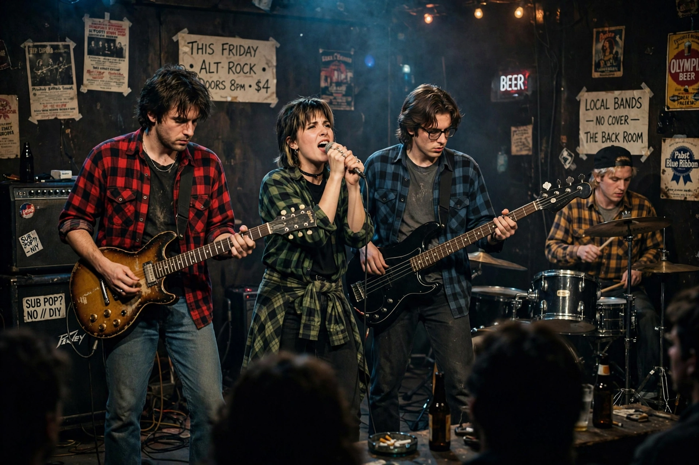

| Alternative rock | |
|---|---|
 | |
| Other names | Alternative music, alt-rock, alternative |
| Stylistic origins | Punk rock, post-punk, hardcore punk, new wave |
| Cultural origins | 1970s–1980s, United Kingdom and United States |
| Subgenres | Grunge, Britpop, indie rock, shoegaze, emo, alternative metal |
Alternative rock (also known as alternative music, alt-rock or simply alternative) is a category of rock music that emerged from the independent music underground of the 1970s and 1980s and became widely popular in the 1990s. "Alternative" refers to the genre's distinction from mainstream rock; artists were unified by their collective debt to punk rock and by independent labels, college radio and fanzine culture.
Key precursors included the Velvet Underground, the Stooges and the punk and post-punk movements. In the 1980s American college rock bands such as R.E.M., Sonic Youth, the Pixies, Hüsker Dü and the Replacements built a national underground circuit, while the Melvins and Seattle bands fused punk with heavy metal.
The breakthrough came in 1991–92 with Nirvana's Nevermind, after which "alternative" became the dominant commercial rock format, encompassing grunge (Pearl Jam, Soundgarden, Alice in Chains), Britpop (Oasis, Blur), and later indie rock. By the 2000s the term had broadened to cover acts from Radiohead to the Strokes and Arcade Fire.
Alternative rock typically uses distorted electric guitars, quiet–loud dynamics, introspective or angst-laden lyrics and a do-it-yourself ethic inherited from punk, though styles range from the noise of shoegaze to acoustic folk-rock.
Soundgarden · Mudhoney · Synth-pop · Pacific Northwest
From Wikipedia, the free encyclopedia (recreated from memory).